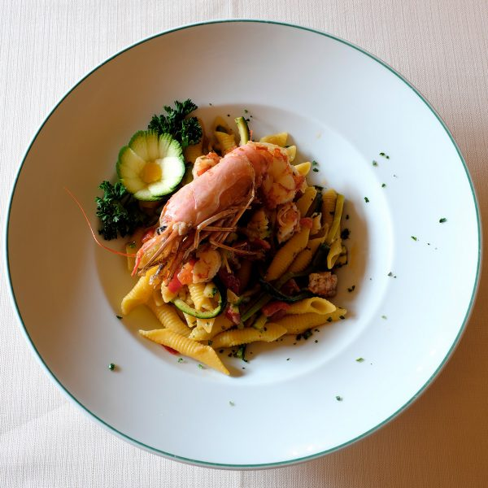
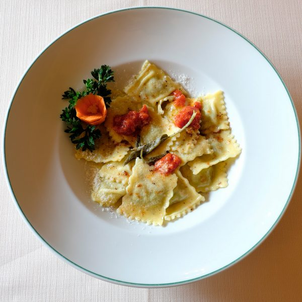
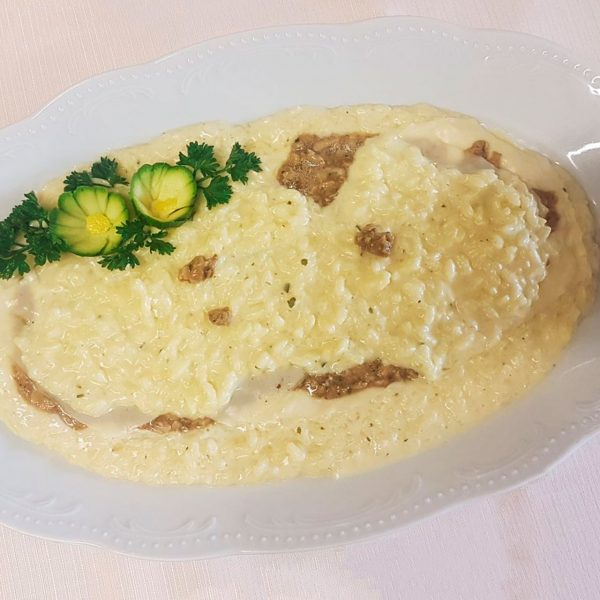
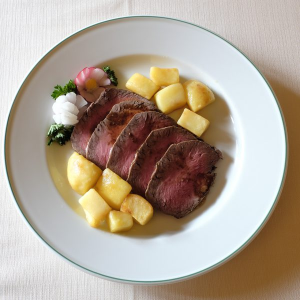
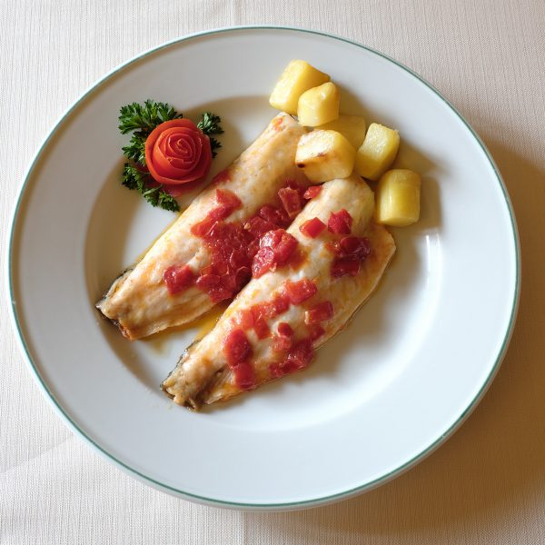
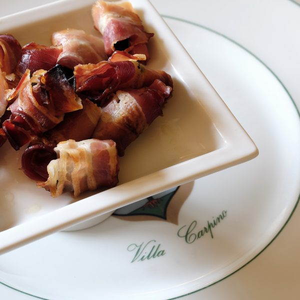
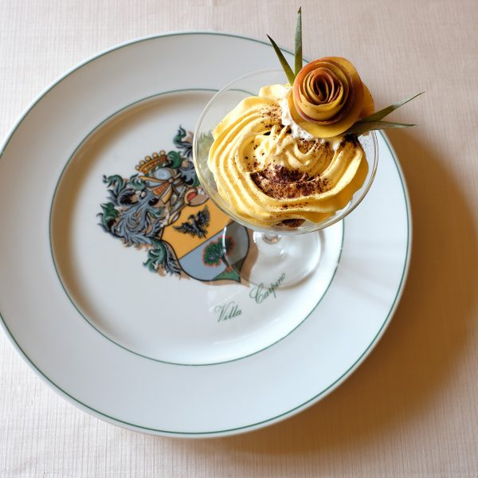
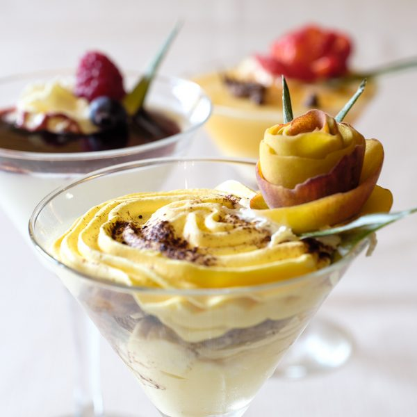
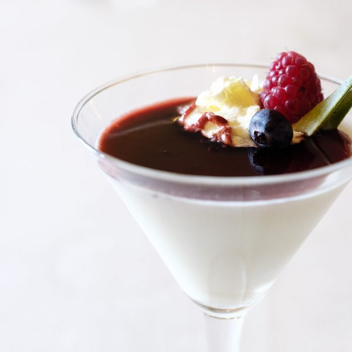

Il ristorante Villa Carpino
in Franciacorta
Il piacere della buona tavola, tra tradizione e accoglienza.
Il gusto di ritrovarsi a tavola.
A Villa Carpino la cucina incontra l’ospitalità: sapori del territorio, ricette della tradizione e proposte che accompagnano i momenti da condividere.
Prenota un tavolo ↗

Una cucina attenta ai sapori e ai dettagli.
La proposta gastronomica affonda le sue radici nel territorio e comprende preparazioni tradizionali e internazionali. La cura dei piatti e del servizio è parte dell’identità della famiglia Barbi.
Un invito a vivere la tavola come occasione di incontro, con attenzione agli ingredienti e ai gesti dell'ospitalità.
I piatti raccontano la nostra cucina.
Una selezione fotografica delle preparazioni documentate nel sito storico, da aggiornare con le proposte effettivamente disponibili.








Fotografie recuperate dal sito precedente: rappresentano preparazioni storiche, non un menu attualmente disponibile.
Ti aspettiamo a Ome.
Contattaci per conoscere gli orari aggiornati e prenotare la tua visita.
Contatti e prenotazioni ↗